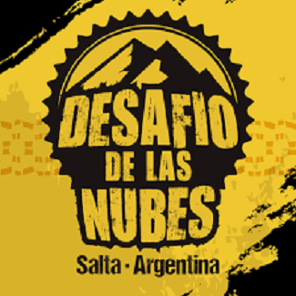
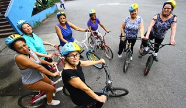
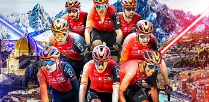

SCOTT: SPARK RC
La Scott Spark RC es una bicicleta de montaña de alta gama diseñada para competiciones de cross-country. Es conocida por su ligereza, rigidez y eficiencia en terrenos difíciles. Utiliza tecnología de suspensión TwinLoc de Scott para ofrecer diferentes configuraciones de suspensión dependiendo de las condiciones del terreno.
+ info
TREK: SUPERCALIBER
Supercaliber Trek es una bicicleta de montaña de la marca Trek, diseñada para competir en carreras de cross country. Es conocida por su ligereza, rigidez y eficiencia en terrenos exigentes.
+ info
SPECIALIZED: EPIC
Specialized Epic EVO es una versión mejorada de la bicicleta de montaña Specialized Epic, diseñada para ofrecer mayor rendimiento y versatilidad en terrenos difíciles. Algunas características comunes de la Specialized Epic EVO incluyen un cuadro ligero y resistente, suspensiones ajustables, ruedas de gran tamaño, transmisión de alta gama y frenos de disco hidráulicos.
+ info
Nombre: Agustina Roldan
Cargo: Presidente

Nombre: Julieta Torres
Cargo: Vice-presidente
Salta: 10° edicion del desafio de las Nubes fue una verdadera Fiesta del Mountain Bike
Con más de 1500 competidores de todas las provincias argentinas y con la presencia de ciclistas de Uruguay, Paraguay y Bolivia, se concretó el pasado domingo en Salta la 10ª edición del Desafío de las Nubes, el evento premium del MTB argentino.. Durante 3 días se vivió en el Parque del Bicentenario, epicentro de la competencia, una fiesta para los amantes del ciclismo y del mountain bike, en un evento que convocó al mejor nivel de pedalistas y a innumerables familias que pudieron disfrutar de una Expo con stands de las principales marcas vinculadas al ciclismo y con carros gastronómicos. En lo específicamente vinculado a lo deportivo, cabe destacar la participación de 1.500 competidores de todo el país y de países limítrofes, repartidos en cuatro pruebas: recorridos de 30 y 80 kilómetros para el Rural Bike y de 35 y 50 kilómetros para el Cross Country, todos divididos en damas y caballeros y en diferentes categorías. La competencia tuvo como unto de largada el Parque del Bicentenario y recorrió el Campo General Belgrano, en los predios del Ejército.Los circuitos se desarrollaron dentro de las 4.000 hectáreas que integran la reserva natural Loma Balcón, dándole un marco natural privilegiado con un característico paisaje de praderas que se combina con desniveles de variada complejidad.
¿Cómo aprender andar en bici a cualquier edad?
La habilidad que hay que aprender para poder a andar en bicicleta es el equilibrio, no el pedaleo, que es una técnica que se comienza a aprender una vez que se incorpora el equilibrio y que es completamente secundaria con respecto al dominio de la bicicleta. Ante infinidad de consultas que recibimos en biciclub.com de gente de todas las edades que quiere saber cómo aprender a andar en bici, esta nota colectiva de nuestros colaboradores proporciona un sistema paso a paso con el cual se puede aprender tanto en solitario como con la ayuda de cualquier voluntario amigo. Con este método un niño aprende en el día y, en el otro extremo, personas mayores con dificultades motoras podrán demorar mucho más pero lo lograrán. La habilidad que hay que aprender para poder a andar en bicicleta es el equilibrio, no el pedaleo, que es una técnica que se comienza a aprender una vez que se incorpora el equilibrio y que es completamente secundaria con respecto al dominio de la bicicleta. Las cuatro bases: 1. Disponer de una bicicleta de la talla adecuada para el aprendiz, de manera que pueda estar en una posición completamente erguida cuando está sentado, y bajar la altura del asiento hasta que la persona pueda, cuando está sentado, apoyar completamente los pies en el piso. Esta bici no debe tener freno contrapedal, porque su uso exige saber pedalear. 2. Sacar los pedales de la bici de aprendizaje con una llave de 15 mm. Para aflojar el pedal izquierdo hay que girar la llave en sentido horario y para aflojar el pedal derecho en sentido antihorario. De no animarse a hacerlo uno mismo, cualquier bicicletero hará esto de forma gratuita si le decimos cuál es nuestro propósito. Otra alternativa -que es por la que optamos nosotros en las fotos- es aprender en una bici plegable, que tiene muchas configuraciones posibles para comodidad del usuario y además, como los pedales se pueden plegar, no es necesario quitarlos. 3. Elegir un lugar plano, con piso de baldosas o asfalto y con poca gente. No conviene que sea de pasto, pero si que el piso sea firme. La única ventaja del pasto es que, ante una caída, esta será más suave, pero la bicicleta rodará con más dificultad. Conclusión: piso muy firme es mejor. 4. En todas las etapas del procedimiento que describiremos se le debe recalcar al aprendiz la necesidad de que dirija su mirada al frente y no a sus pies y que mantenga los dos dedos de cada mano suavemente apoyados en los mandos de freno.
Carlos Rodríguez y Egan Bernal, al frente del Ineos en el Tour de Francia 2024
Carlos Rodríguez y el colombiano Egan Bernal serán los líderes del Ineos Grenadiers en la 111ª edición del Tour de Francia, que comienza este sábado en Florencia y termina en Niza el 21 de julio. Rodríguez (Almuñecar, 23 años), ganador del Tour de Romandía y Bernal (Bogotá, 27 años), ganador del Tour 2019 y del Giro 2021, serán las opciones de un equipo británico que también ha incluido en su ocho a corredores de gran experiencia, como Geraint Thomas, ganador del Tour 2018, Tom Pidcock, Michal Kwiatkowski, Jonathan Castroviejo, Laurens De Plus, Ben Turner y Scott Drawer.